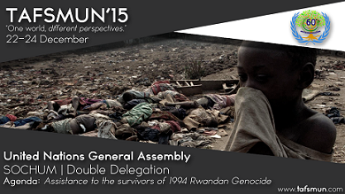

United Nations General Assembly
Social, Humantarian and Cultural Committee
Double Delegation

Committee Details
The Third Committee of the General Assembly engages a range of social, humanitarian and cultural questions with the larger aim of protecting and promoting human rights. The committee takes a human rights approach to many issues and receives special reports from the Human Rights Council, in addition to discussing concerns relating to women, children, indigenous peoples, refugees and self-determination. It also addresses social development areas including youth, ageing, persons with disabilities, crime prevention, justice, and drug control. In 2012, the Third Committee had 73 topics to debate, of which more than half were related to human rights. Its wider membership than the UN Human Rights Council (UNHRC) means that debate in the Third Committee is of a different, unique flavour.
Executive Board

Shaurya Upadhyay
Chairperson

Agastya Sen
Vice Chairperson